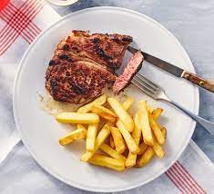

The juiciest Rump Steak Recipe you'll find!

Ingredients
- 2 x 200g rump steak about 2-3cm thick
- 1 tbsp sunflower oil
- 1 tbsp unsalted butter
- 1 large garlic clove, bashed once
- 1 sprig thyme or rosemary (optional)
Method
- Take the steaks out of the fridge 30 mins before cooking them. Pat them dry and season.
- Heat a non-stick heavy-based frying pan over a very high heat. Drizzle in the oil, then add the butter, garlic and steaks, nestling the herbs around them. With a pair of tongs, turn the steaks every 30 secs to 1 min so they get a nice brown crust. As a rough guide, each steak will take 3 mins in total for rare, 4-5 mins in total for medium and 7-8 mins for well done. If you have a digital cooking thermometer, the middle of the steak should be 50C for rare, 60C for medium and 70C for well done. If your steak has a thick layer of fat running down the side, hold the steak on its side with a pair of tongs and push the fat into the pan for 2 mins or until golden brown.
- Transfer the steak to a plate. Cover in foil and leave to rest for 5 mins before serving.
Thanks to
BBC Good Food
for the recipe!
Go Home